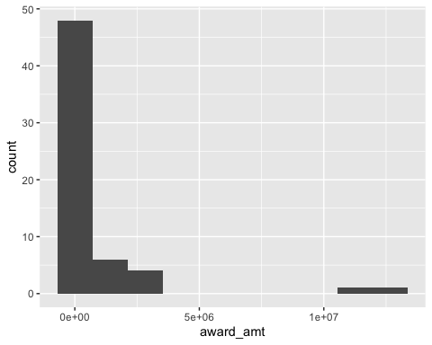

source("R/functions.R")4 NSF-funded projects on Databrary
This page summarizes data about NSF-funded projects that have used Databrary to store and share data. This is one component of making research data stored on the site more accessible.
Background
Rick Gilmore and Andrea Seisler developed code to generate a series of reports about Databrary’s users, assets, and data.
In summer 2023, that code was migrated to the Databrary organization on GitHub. The code base for these reports can be found at https://github.com/databrary/analytics. The latest fully rendered analytics report can be found at https://databrary.github.io/analytics.
Note: Databrary’s API does not permit access to datasets or volumes that have yet to be shared by the volume owner. This means that the data we report here are an underestimate of the total number of projects and datasets that have actually received NSF funding.
Volume funders
Databrary permits users to list funders associated with a dataset. The funding information across the site is updated regularly. The latest report can be found at https://databrary.github.io/analytics/funders.html.
As of 2023-08-30, NSF was listed as a funder by the largest number of volumes on Databrary.
Here, we regenerate the data.
Setup
Most of the work is done via functions listed in R/functions.R.
Databrary volumes that mention NSF
To query Databrary for the volumes that mention an NSF award, we run the following.
As of 2023-09-01, volume 1635 was the largest volume index. So, we can query Databrary volume-by-volume, to collect data about volumes that list NSF as a funder, as follows:
db_w_nsf <-
purrr::map(1:1635,
get_vol_awards,
funder_str = "NSF",
.progress = "Databrary vols w/ NSF:") |> purrr::list_rbind() |>
add_clean_nsf_award_id() |>
readr::write_csv(db_w_nsf, "csv/databrary-vols-w-nsf-funding-all.csv")The above uses the get_vol_awards() function and the funder_str parameter to select award information that lists NSF. Then, the NSF award IDs are cleaned to match the NSF format with add_clean_nsf_award_id().
Note
The funding award IDs must be cleaned because the current Databrary system does not validate their formats. The funding award information is a free text field. It would be helpful if a future version of Databrary could validate these entries to reduce post hoc data cleaning.
This takes several moments, so for this report, we import a previously saved file with the same data.
db_nsf <- readr::read_csv("csv/databrary-vols-w-nsf-funding-all.csv", show_col_types = FALSE)Then, we can start to visualize the data. Here is a table with all of the shared Databrary volumes mentioning NSF as a funder:
db_nsf <- db_nsf |>
dplyr::filter(!is.na(award_id)) |>
dplyr::mutate(url = paste0("https://databrary.org/volume/", vol_id))
db_nsf |>
dplyr::select(vol_id, award_id, url) |>
knitr::kable(format = 'html') |>
kableExtra::kable_material() |>
kableExtra::scroll_box(width = "700px", height = "400px")| vol_id | award_id | url |
|---|---|---|
| 1 | 1238599 | https://databrary.org/volume/1 |
| 2 | 1147440 | https://databrary.org/volume/2 |
| 8 | 0721383 | https://databrary.org/volume/8 |
| 11 | 1349044 | https://databrary.org/volume/11 |
| 15 | 0808767 | https://databrary.org/volume/15 |
| 15 | 1052736 | https://databrary.org/volume/15 |
| 23 | 1147440 | https://databrary.org/volume/23 |
| 30 | 1247590 | https://databrary.org/volume/30 |
| 31 | 0092452 | https://databrary.org/volume/31 |
| 32 | 0092452 | https://databrary.org/volume/32 |
| 45 | 1147543 | https://databrary.org/volume/45 |
| 49 | 1147440 | https://databrary.org/volume/49 |
| 68 | 1147440 | https://databrary.org/volume/68 |
| 73 | 1147440 | https://databrary.org/volume/73 |
| 75 | 1147440 | https://databrary.org/volume/75 |
| 77 | 1248076 | https://databrary.org/volume/77 |
| 79 | 1331073 | https://databrary.org/volume/79 |
| 81 | 1147440 | https://databrary.org/volume/81 |
| 109 | 1220305 | https://databrary.org/volume/109 |
| 116 | 1147440 | https://databrary.org/volume/116 |
| 207 | 1929935 | https://databrary.org/volume/207 |
| 207 | 1661068 | https://databrary.org/volume/207 |
| 218 | 1147440 | https://databrary.org/volume/218 |
| 253 | 1929935 | https://databrary.org/volume/253 |
| 253 | 1661068 | https://databrary.org/volume/253 |
| 268 | 15233982 | https://databrary.org/volume/268 |
| 269 | 1929935 | https://databrary.org/volume/269 |
| 269 | 166106 | https://databrary.org/volume/269 |
| 272 | 1255832 | https://databrary.org/volume/272 |
| 324 | 1248076 | https://databrary.org/volume/324 |
| 471 | 1627993 | https://databrary.org/volume/471 |
| 480 | 1561182 | https://databrary.org/volume/480 |
| 480 | 1561122 | https://databrary.org/volume/480 |
| 545 | 1056805 | https://databrary.org/volume/545 |
| 546 | 1056805 | https://databrary.org/volume/546 |
| 546 | 1560810 | https://databrary.org/volume/546 |
| 608 | 1560810 | https://databrary.org/volume/608 |
| 707 | 1627993 | https://databrary.org/volume/707 |
| 950 | 1929935 | https://databrary.org/volume/950 |
| 950 | 1661068 | https://databrary.org/volume/950 |
| 987 | 1620294 | https://databrary.org/volume/987 |
| 1062 | 1462280 | https://databrary.org/volume/1062 |
| 1062 | 1400802 | https://databrary.org/volume/1062 |
| 1062 | 1400810 | https://databrary.org/volume/1062 |
| 1116 | 1627993 | https://databrary.org/volume/1116 |
| 1135 | 1302741 | https://databrary.org/volume/1135 |
| 1187 | 1655300 | https://databrary.org/volume/1187 |
| 1241 | 1761053 | https://databrary.org/volume/1241 |
| 1249 | 1462280 | https://databrary.org/volume/1249 |
| 1279 | 1749376 | https://databrary.org/volume/1279 |
| 1294 | 0951580 | https://databrary.org/volume/1294 |
| 1398 | 2043717 | https://databrary.org/volume/1398 |
| 1403 | 1761053 | https://databrary.org/volume/1403 |
| 1437 | 1056805 | https://databrary.org/volume/1437 |
| 1437 | 1560810 | https://databrary.org/volume/1437 |
| 1437 | 1728133 | https://databrary.org/volume/1437 |
| 1474 | 1052736 | https://databrary.org/volume/1474 |
| 1495 | 1628300 | https://databrary.org/volume/1495 |
| 1550 | 1444758 | https://databrary.org/volume/1550 |
| 1550 | 1948790 | https://databrary.org/volume/1550 |
| 1580 | 1941449 | https://databrary.org/volume/1580 |
| 1589 | 2004983 | https://databrary.org/volume/1589 |
Note
Note that we have added a URL that links directly to the shared volume on Databrary.
There are \(n=\) 50 unique shared Databrary volumes that list NSF as a funder, and \(n=\) 38 unique NSF awards. This is because some NSF awards have resulted in multiple shared Databrary volumes.
NSF funding data on these projects
We can now match these projects with funding information available about them from NSF directly.
Illustration using the current grant
Before we do that, we will illustrate how the get_nsf_data_for_award_id() function can be used to gather information from the NSF funding database about the current project.
nsf_2032713_df <- get_nsf_data_for_award_id(2032713)
nsf_2032713_df# A tibble: 1 × 12
agency awardeeCity awardeeName awardeeStateCode fundsObligatedAmt id
<chr> <chr> <chr> <chr> <chr> <chr>
1 NSF University Park Pennsylvania … PA 199977 2032…
# ℹ 6 more variables: piFirstName <chr>, piLastName <chr>,
# publicAccessMandate <chr>, date <chr>, startDate <chr>, title <chr>Visualizations
nsf |>
dplyr::mutate(award_amt = as.numeric(fundsObligatedAmt)) |>
ggplot2::ggplot() +
ggplot2::aes(award_amt) +
ggplot2::geom_histogram(bins=10)
These represent \(n=\) 38 unique NSF awards.
Of these, we were able to extract data from the NSF API for \(n=\) 36 NSF awards.
The following volumes do not have matching NSF awards.
| vol_id | award | url |
|---|---|---|
| 268 | BCS-15233982 | https://databrary.org/volume/268 |
| 269 | NSF BCS-166106 | https://databrary.org/volume/269 |
The NSF award IDs must be in error for these volumes.
We can search the NSF database for the term ‘databrary’ to see if we can find the correct NSF award ID.
nsf_w_databrary <- get_nsf_data_for_keyword("databrary")The following NSF-funded projects mention “Databrary” according to the NSF API:
nsf_w_databrary |>
dplyr::select(piFirstName, piLastName, id, title) |>
dplyr::arrange(piLastName, piFirstName) |>
knitr::kable(format = 'html') |>
kableExtra::kable_material() |>
kableExtra::scroll_box(width = "700px", height = "400px")| piFirstName | piLastName | id | title |
|---|---|---|---|
| Karen | Adolph | 1627993 | NSF/SBE-BSF: Neural patterns underlying the development of planning in action production and anticipation in action perception |
| Karen | Adolph | 1139702 | Data Coding, Analysis, Archiving, and Sharing for Open Collaboration: From OpenSHAPA to Open Data Sharing |
| Elizabeth | Bonawitz | 1623486 | EAGER: MAKER: The origins of making: A Data Science Approach to Investigating Cognitive and Affective Basis of Learning through Constructing |
| Rick | Gilmore | 2032713 | EAGER: Expanding public access to restricted research data |
| Rick | Gilmore | 1238599 | Databrary: An open video-based data-sharing system for developmental science |
| Felice | Levine | 1656866 | Workshop Proposal on Replication, Reproducibility, and the Use of Data Assets in Advancing the Frontiers of Science in Education Research--the Critical Role of Journals |
| Vanessa | LoBue | 1247590 | Validation of the Child Affective Facial Expressions Set (CAFE) |
| James | Rehg | 1524565 | Comp Cog: Collaborative Research on the Development of Visual Object Recognition |
| Linda | Smith | 1523982 | Comp Cog: Collaborative Research on the Development of Visual Object Recognition |
| Catherine | Tamis-LeMonda | 2313856 | Postdoctoral Fellowship: SPRF: Enabling Access: How Mothers Support Infants’ Emerging Motor Skills to Facilitate Infants’ Exploration of the Environment |
| Catherine | Tamis-LeMonda | 1761053 | Collaborative Research: Math Cognition In Toddlers From Latino and White Families: Contributions Of Home Experiences With Mothers and Fathers |
| Catherine | Tamis-LeMonda | 1528831 | RUI: An Investigation of Short and Long Term Effects of Cradling on Development |
We can filter these based on the last names of the Databrary volume owners.
nsf_w_databrary |>
dplyr::select(piFirstName, piLastName, id) |>
dplyr::filter(piLastName %in% c("Smith", "Bonawitz")) |>
dplyr::arrange(id) |>
knitr::kable(format = 'html') |>
kableExtra::kable_material() |>
kableExtra::scroll_box(width = "700px", height = "200px")| piFirstName | piLastName | id |
|---|---|---|
| Linda | Smith | 1523982 |
| Elizabeth | Bonawitz | 1623486 |
From this result, it looks like the correct NSF award IDs for the projects on Databrary are 1523982 and possibly 1623486. Databrary staff will contact the PIs to ascertain if this is the case and correct Databrary’s records, as appropriate.
Note
Note that this workflow helps evaluate the quality of the data and metadata stored on Databrary.
We are considering incorporating these functions into the databraryr package in a future release.